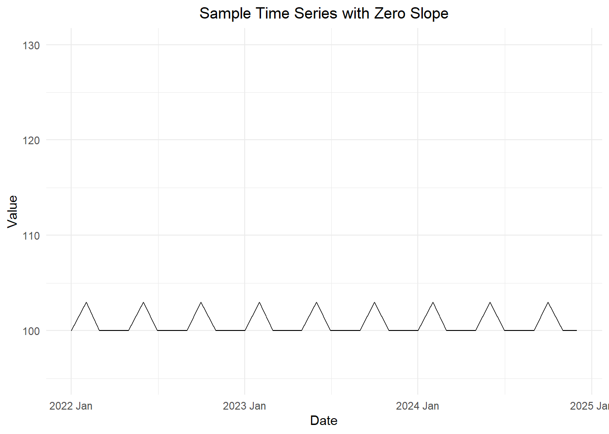
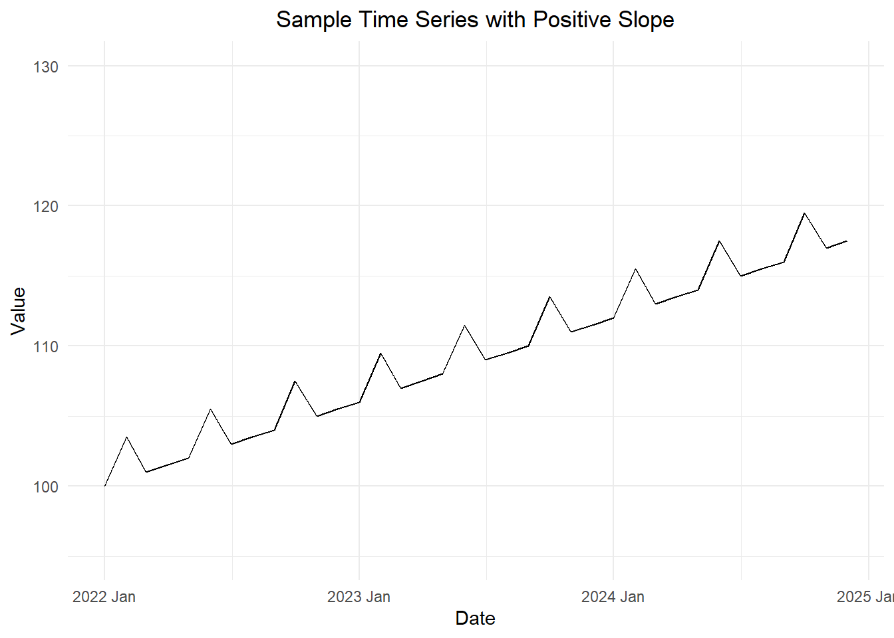
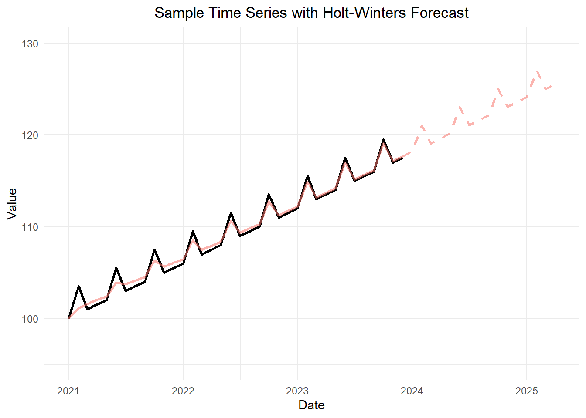

Holt-Winters Method (Additive Models) - Part 1
Chapter 3: Lesson 3
Learning Outcomes
Implement the Holt-Winter method to forecast time series
- Justify the need for the Holt-Winters method
- Describe how to obtain initial parameters for the Holt-Winters algorithm
- Explain the Holt-Winters update equations for additive decomposition models
- Explain the purpose of the parameters \(\alpha\), \(\beta\), and \(\gamma\)
- Interpret the coefficient estimates \(a_t\), \(b_t\), and \(s_t\) of the Holt-Winters algorithm
- Explain the Holt-Winters forecasting equation for additive decomposition models, Equation (3.22)
Preparation
- Read Section 3.4.2 (Page 59 - top of page 60 only)
Learning Journal Exchange (10 min)
Review another student’s journal
What would you add to your learning journal after reading another student’s?
What would you recommend the other student add to their learning journal?
Sign the Learning Journal review sheet for your peer
Introduction to the Holt-Winters Method–Additive Model (35 min)
We will describe the historical progression that led to the Holt-Winters method.
Review: Exponentially Weighted Moving Average (EWMA) or Simple Exponential Smoothing
The exponential weighted moving average (EWMA) is a simple method for smoothing (or filtering) a time series. The update equation for the estimate of the level of the time series is
\[ a_t = \alpha x_t + (1-\alpha) a_{t-1} \]
where \(a_t\) is the estimate of the level of the time series at time \(t\) and \(0 \le \alpha \le 1\) is the smoothing paramter.
This is known as the level update equation, because at each time step, we can update our estimate of the level (or the center) of the time series. It is called exponential smoothing, because at each preceding value has exponentially decreasing influence on the estimate.
These computations are based on previous values and \(a_1 = x_1\). The number \(0 \le \alpha \le 1\) is a smoothing parameter. This determines how much weight is given to previous values when creating the updated level estimate.
If you were to use this model for forecasting, you would not be able to consider any trend or seasonality in the forecast. Hence, the future values would all be forecasted as the last value of \(a_n\):
\[ \hat x_{n+k|n} = a_n \] where \(\hat x_{n+k \mid n}\) is the estimate of the time series \(k\) time units in the future past time \(t=n\). Frankly, this is not very useful, because many time series have trends or seasonality.
Holt’s Exponential Smoothing
In 1957, Charles Holt published a new procedure that introduced a trend into this model. The forecasted values were:
\[ \hat x_{n+k|n} = a_n + k b_n \]
where \(b_n\) is the slope indicating how much the time series changes on average from one time point to another and \(k\) is the number of time periods past \(t=n\) you are forecasting.
This method uses the same level update equation as EMWA. The slope update equation is:
\[ b_t = \beta \left( a_t - a_{t-1} \right) + (1-\beta) b_{t-1} \]
where \(0 \le \beta \le 1\) is a smoothing parameter, \(b_t\) is the slope estimate at time \(t\), and \(a_t\) is the estimate of the level of the time series at time \(t\).
Holt-Winters Filtering (Winters’ Exponential Smoothing)
Peter Winters, a colleague of Holt’s at the Carnagie Institute of Technology, published an enhancement of Winters’ technique in 1960 that allowed for seasonal variation. This is known as the Holt-Winters Method or Holt-Winters Filtering.
Forecast Equation
The forecast equation is:
\[ \hat x_{n+k|n} = a_n + k b_n + s_{n+k-p} \]
where \(\hat x_{n+k|n}\) is the forecasted value of the time series \(k\) units in the future after time \(t=n\), and the time series is assumed to have seasonality with a period of \(p\) time units; \(a_n\) is the level of the time series at time \(t=n\); \(b_n\) is the slope of the time series at time \(t=n\); and \(s_{n+k-p}\) is the estimated seasonal component at time \(t=n+k-p\). Note that we must look back one full period to get the estimated seasonal component.
Update Equations
There are three update equations, one each for \(a_t\) (level), \(b_t\) (slope), and \(s_t\) (seasonal component).
\[\begin{align*} a_t &= \alpha \left( x_t - s_{t-p} \right) + (1-\alpha) \left( a_{t-1} + b_{t-1} \right) && \text{Level} \\ b_t &= \beta \left( a_t - a_{t-1} \right) + (1-\beta) b_{t-1} && \text{Slope} \\ s_t &= \gamma \left( x_t - a_t \right) + (1-\gamma) s_{t-p} && \text{Seasonal} \end{align*}\]
where \(\{x_t\}\) is a time series from \(t=1\) to \(t=n\) that has seasonality with a period of \(p\) time units; at time \(t\), \(a_t\) is the estimated level of the time series, \(b_t\) is the estimated slope, and \(s_t\) is the estimated seasonal component; and \(\alpha\), \(\beta\), and \(\gamma\) are parameters (all between 0 and 1).
Initial Estimates of \(a_t\), \(b_t\), and \(s_t\)
We can use the update equations to compute the next value of \(a_t\), \(b_t\), and \(s_t\), once we get going. Yet, how do we get started? What are the initial values of these estimates?
Estimating \(a_1\):
It is reasonable to let \(a_1 = x_t\). We simply start our estimate of the level of the time series at the initial data value.
Estimating \(b_1\):
For the value of \(b_1\), the Cowpertwait textbook vaguely suggests estimating this from the data or setting it to zero. Setting \(b_1\) to zero is problematic, because it adversely affects the level and slope estimates at the beginning of the time series. We need a better way.
We will approximate \(b_1\) by averaging the slope between pairs of points one period apart. Recall that \(p\) is the number of observations per period. (Monthly data which have an annual cycle would have \(p=12\). Daily data with a weekly cycle have \(p=7\).) Note that the fraction in the “Check Your Understanding” box above is an estimate of the slope of the time series as it moves from time \(1\) to time \(p+1\). These are the first observations in the first two cycles. We compute these estimated slopes for all the paired observations in the first two cycles, then we compute the mean of these slopes. This is reflected in the expression for \(b_1\):
\[ b_1 = \frac{ \left( \dfrac{x_{p+1} - x_{1}}{p} + \dfrac{x_{p+2} - x_{2}}{p} + \dfrac{x_{p+3} - x_{3}}{p} + \cdots + \dfrac{x_{2p-1} - x_{p-1}}{p} + \dfrac{x_{2p} - x_{p}}{p} \right) }{p} \]
Estimating \(s_1, s_2, \ldots s_p\):
The initial \(p\) values of the seasonal effects, \(s_1, s_2, \ldots s_p\), can be determined either by estimating based on the data or your prior experience; alternatively, they could be set to 0. For \(t=1, 2, 3, \ldots, p\) iterations, use your estimate for \(s_t\) when the formulas call for \(s_{t-p}\).
Note
To implement the initial seasonality estimates, we include them in the model as \[ s_{1-p}, ~ s_{2-p}, ~ s_{3-p}, ~ \ldots, ~ s_{p-p} \] This allows us to begin using the data to update the \(s_p\) values in the first cycle of seasonality (\(t = 1, 2, 3, \ldots, p\)).
Application of the Holt-Winters Method to a Sample Time Series (10 min)
The Holt-Winters method provides a way to model a time series in which we consider the time series in layers. first, there is the level (the smoothed \(x_t\) values from the time series) at time \(t\). We will denote the level by \(a_t\). The level can change from time to time. We introduce a value \(b_n\), which we call the slope. This is the change in the level of the series from one time period to another. (As the book points out, R and many textbooks call the slope the trend.) Finally, we include a seasonal estimate, \(s_t\), which indicates how much the time series rises or falls above the level and trend values at time \(t\).
To visualize these terms, it can be helpful to consider the forecasting model. Suppose we have computed that Holt-Winters estimate of a time series with \(n\) observations. In other words, we have just fit a curve to the entire time series. We will use a very simple time series for this illustration.
First, consider a time series that has a seasonal pattern of (100, 104, 100, 100) with zero trend and random components. This is illustrated in Figure 1.
Now, we add a slope of \(\frac{1}{2}\) to this time series. In Figure 2, we observe the same sample time series, but with the added component of a slope.

Next, we apply the Holt-Winters method to these data. Figure 3 illustrates the Holt-Winters filter plotted against the data.

Simulation of Holt-Winters Filtering (10 min)
Homework Preview (5 min)
- Review upcoming homework assignment
- Clarify questions
References
- C. C. Holt (1957) Forecasting seasonals and trends by exponentially weighted moving averages, ONR Research Memorandum, Carnegie Institute of Technology 52. (Reprint at https://doi.org/10.1016/j.ijforecast.2003.09.015).
- P. R. Winters (1960). Forecasting sales by exponentially weighted moving averages. Management Science, 6, 324–342. (Reprint at https://doi.org/10.1287/mnsc.6.3.324.)